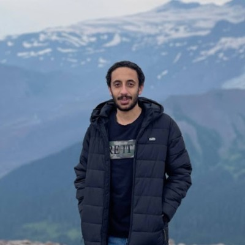

About
I am a PhD candidate in Electrical and Computer Engineering at Cornell University, where I focus on optimizing generative inference systems through software-hardware codesign. My research spans LLM acceleration, model compression (quantization and sparsity), hardware-aware DNN optimization, and efficient inference across diverse hardware platforms including GPUs, FPGAs, and CPUs with AMX extensions.
Prior to my PhD, I spent six years at Instabug where I grew from a backend developer to an engineering manager, scaling the backend team from 5 to 30 people. I also served as a Research & Teaching Assistant at Ain Shams University. I am a former ICPC World Finalist and a three-time Google Summer of Code student turned mentor.
Research Interests
News
- May 2026 Joining Google for a summer internship.
- 2025 BitMoD accepted at HPCA 2025 in Las Vegas, NV.
- Jun 2025 Started internship at ByteDance Inc. as CPU Application Platform Engineer.
- Dec 2024 Earned M.Sc. in Electrical & Computer Engineering from Cornell University.
- Nov 2024 ShadowLLM presented at EMNLP 2024 in Miami, Florida.
- 2024 PQA published in ACM TRETS.
- 2024 Beyond Inference presented at DAC '61.
- May 2024 Started internship at Intel Labs working on LLM optimization on AMX-powered CPUs.
Selected Publications
BitMoD: Bit-serial Mixture-of-Datatype LLM Acceleration
IEEE International Symposium on High-Performance Computer Architecture, Las Vegas, NV, March 2025
ShadowLLM: Predictor-based Contextual Sparsity for Large Language Models
Proceedings of the 2024 Conference on Empirical Methods in Natural Language Processing, Miami, Florida, November 2024, pp. 19154–19167
PQA: Exploring the Potential of Product Quantization in DNN Hardware Acceleration
ACM Transactions on Reconfigurable Technology and Systems, Vol. 18, No. 1, December 2024
Beyond Inference: Performance Analysis of DNN Server Overheads for Computer Vision
61st ACM/IEEE Design Automation Conference (DAC), San Francisco, CA, June 2024